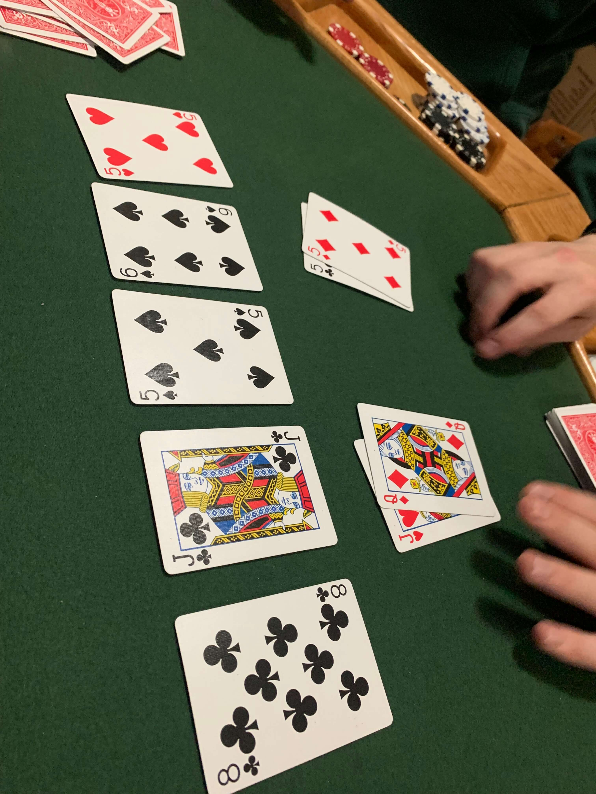

Collection of Photos That I Have and or Found
⇐

Above is pictured the first time that I had seen someone get a four of a kind in Texas Hold'em. This a very rare hand to get in Hold'em (about 2.1% of the time by time the last card is played). The person with the Q♦, J♥ felt pretty good when the first three cards came out since they had paired their J♥ with the J♣. The player with the 5♣, 5♦ felt great since the had made three of a kind fives with the 5♠. The next card came out and both players felt even better since the 6♠ didn't help them and most likely didn't help their oppenent. Then comes the 5♥. The player with the Q♦, J♥ was a little nervous since they thought that the other player could have three of kind with a single 5 in their hand. The 5♣, 5♦ is feeling giddy since they know that they are going to win the hand. Q♦, J♥ bets high to scare off the other player, but 5♣, 5♦ snap raises all in, they flip their cards over and the 5♣, 5♦ player walks away with a lot of money.